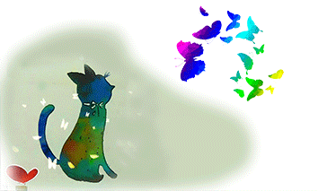

致这让人又爱又恨的双十一
var g_audio = window.g_audio = new Audio(); //创建一个audio播放器
var g_event = window.g_event = new
function() {
var events = ['load', 'abort', 'canplay', 'canplaythrough', 'durationchange', 'emptied', 'ended', 'error', 'loadeddata', 'loadedmetadata', 'loadstart', 'pause', 'play', 'playing', 'progress', 'ratechange', 'seeked', 'seeking', 'stalled', 'suspend', 'timeupdate', 'volumechange', 'waiting', 'mediachange'];
g_audio.loop = false;
g_audio.autoplay = true;
g_audio.isLoadedmetadata = false;
g_audio.touchstart = true;
g_audio.audio = true;
g_audio.elems = {};
g_audio.isSupportAudio = function(type) {
type = type || "audio/mpeg";
try {
var r = g_audio.canPlayType(type);
return g_audio.canPlayType && (r == "maybe" || r == "probably")
} catch(e) {
return false;
}
};
g_audio.push = function(meta) {
g_audio.previousId = g_audio.id;
g_audio.id = meta.song_id;
g_audio.previousSrc = g_audio.src;
g_audio.previousTime = 0.00;
g_audio.src = g_audio.currentSrc = meta.song_fileUrl;
g_audio.isLoadedmetadata = false;
g_audio.autobuffer = true;
g_audio.load();
g_audio.play();
if (g_audio.previousSrc !== g_audio.src) {
g_audio.play();
}
};
for (var i = 0,
l = events.length; i < l; i++) { (function(e) {
var fs = [];
this[e] = function(fn) {
if (typeof fn !== 'function') {
for (var k = 0; k < fs.length; k++) {
fs[k].apply(g_audio);
}
return;
}
fs.push(fn);
g_audio.addEventListener(e,
function() {
fn.apply(this);
});
};
}).apply(this, [events[i]]);
}
this.ended(function() { //播放结束
});
this.load(function() { //加载
this.pause();
this.play();
});
this.loadeddata(function() {
this.pause();
this.play();
});
this.loadedmetadata(function() {
this.isLoadedmetadata = true;
});
this.error(function() { //请求资源时遇到错误
});
this.pause(function() { //歌曲暂停播放
});
this.play(function() { //歌曲播放
});
};
$$$$(document).ready(function() {
if (/i(Phone|P(o|a)d)/.test(navigator.userAgent)) {
$$$$(document).one('touchstart',
function(e) {
g_audio.touchstart = true;
g_audio.play();
g_audio.pause();
return false;
});
}
});
audio使用: $$$$("#main").unbind("click").bind("click",
function() {
//gid 表示歌曲id,只是一个表示，没有值不影响播放
//song_fileUrl :播放歌曲地址，不能为空，有效地址
g_audio.elems["id"] = gid;
g_audio.push({
song_id: gid,
song_fileUrl: 光棍.mp3
});
}); //绑定事件
11.11——今天，你剁手了吗？

这个双十一，我们主打的~~~
是情怀！！！
DUANG~ 就像左下角这张GIF，有没有很触及心灵[笑哭脸]。哈哈！开个玩笑吭。你别怪我随便捣鼓你头像就好。。。
最后，本网站也想跟个“双十一购物狂欢节”的风儿，发波福利：复制如下红包口令，打开“支付宝-红包”，领取“本站专属双十一超级无敌巨大惊喜VIP大红包”
红包口令： 待定先
另外，我前几天在淘宝上看到一个暖手宝，感觉你可能会需要，了解一下？ 下面是链接：
暖手宝，我中意那款蓝色的┓( ´-` )┏